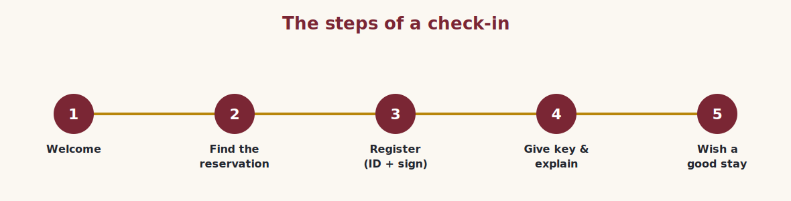

English for the Hospitality Industry — Orient Rose Hotel, Damascus

By the end of this Warm Up you can describe what happens when a guest arrives, and say what the front desk must do first.
By the end of Part 1 you can name the steps and the documents of a check-in, and the things you hand a guest.
By the end of Part 2 you can talk about arrangements already made with the present continuous, and plans with 'going to'.
Grammar — Present Continuous and 'going to'
5 activities
Grammar — Present Continuous and 'going to' (2)
1 activity
By the end of Part 3 you can follow a check-in and note the room, the nights and what the guest was told.
By the end of Part 4 you can check a guest in from greeting to key, explaining breakfast and the facilities as you go.
By the end of Part 5 you can read a front-desk procedure and say what must happen in what order.
By the end of Part 6 you can write a short note for the next shift about an arriving guest.
By the end of Part 7 you can make a tired guest feel welcome while the paperwork is done.
By the end of Part 8 you can run a check-in using this unit's vocabulary and future forms together.
By the end of Part 9 you can decide what to do when a guest arrives before the room is ready, and offer something real.
By the end of Part 10 you can use this unit's check-in language again without prompting, and tick what you can now do.
By the end of Part 11 you can check in a group, or a guest whose booking does not match what is on the screen.